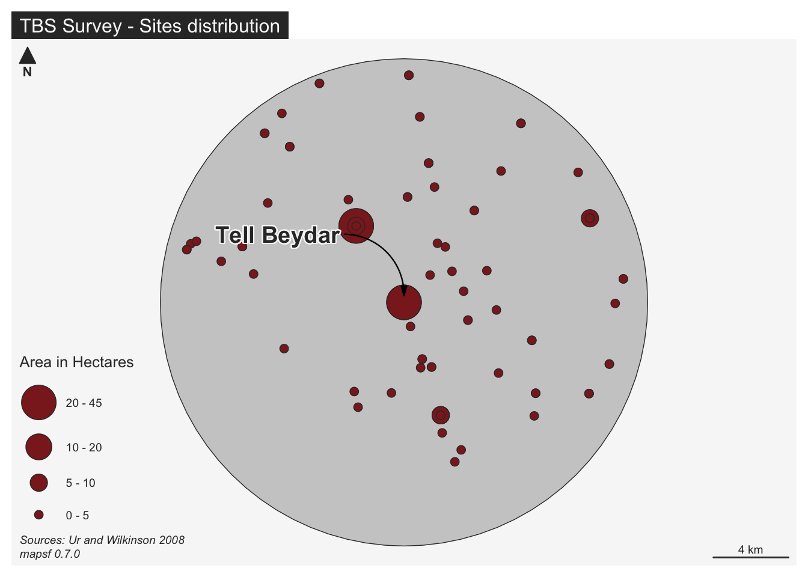

# install.packages("sf")
library(sf)Archaeological Spatial Analysis in R
Lesson 1
Learning Objectives
learn about R-spatial ecosystem
introduce vector and raster data
plot spatial data that are used in the class
Introduction
The objective of this lesson is to read and plot spatial data in R.
You will also become familiar with syntax variety of packages used for mapping.
Background Reading
- Lovelace R, Nowosad K, Muenchow J, Geocomputation with R, Chapter 1,2 and 9 - link
R-spatial
CRAN Task View: Analysis of Spatial Data provides a comprehensive list of most of R packages created to work with spatial data.
https://cran.r-project.org/web/views/Spatial.html
Fundamental are R packages with classes representing spatial data:
vector:
sf,sp,stars,spatstatsraster:
terra,raster,stars
Data
The data were obtained from various publications and open source repositories.
Vector data for the classes are stored in a geopackage data.gpkg.
data>vect
Raster data are stored in geotiff format.
data>rast
Data download: https://topographos.github.io/asar/data.zip
Vector
The sf package
We are going to use package sf to read and map vector layers by using the following functions:
st_layers()returns layers in a data sourcest_read()reads simple features from file or database.plot()plots one or more attributeshead()return first parts of the object
Load sf package
Explore content of the geopackage
st_layers("../data/vect/data.gpkg")Driver: GPKG
Available layers:
layer_name geometry_type features fields crs_name
1 sites_point Point 88 11 WGS 84 / UTM zone 37N
2 sites_polygon Multi Polygon 323 6 WGS 84 / UTM zone 37N
3 survey_extent Multi Polygon 1 2 WGS 84 / UTM zone 37N
4 hollow_ways Multi Line String 568 4 WGS 84 / UTM zone 37N
5 aoi Polygon 1 5 WGS 84 / UTM zone 37N
6 geology Multi Polygon 7 1 WGS 84 / UTM zone 37N
7 rimes_rivers Multi Line String 1 8 WGS 84 / UTM zone 37Nsurvey_extent - 12 km radius covering area surveyed around Tell Beydar
source: Ur and Wilkinson 2008
# read
survey_extent = st_read("../data/vect/data.gpkg", layer = "survey_extent", quiet = TRUE)
# glimpse
# head(survey_extent)
# plot
plot(survey_extent["code"], lty = "dashed", col = NA)sites_point - a point layer of archaeological settlements surveyed around Tell Beydar
source: Ur and Wilkinson 2008; Palmisano et al. - link
# read
sites = st_read("../data/vect/data.gpkg", layer = "sites_point", quiet = TRUE)
# glimpse
# head(sites, n = 3)
#plot
plot(st_geometry(sites))sites_polygon - a polygon layer of archaeological settlements detected using remote sensing based survey; the polygons were derived from sites outlines and locations.
source: Menze and Ur, 2012 - link
# read
sites_polygon = st_read("../data/vect/data.gpkg", layer = "sites_polygon", quiet = TRUE)
# glimpse
# head(sites_polygon, n = 3)
#plot
plot(sites_polygon[,"max_elevation_mound_m"],
nbreaks = 10,
pal = hcl.colors(11, "Cividis"),
lwd = 0.1,
key.pos = 4)hollow_ways - ancient tracks now visible as shallow linear depressions; represented as polylines.
source: Ur, 2010 - source
# read
hollow_ways = st_read("../data/vect/data.gpkg", layer = "hollow_ways", quiet = TRUE)
# glimpse
# head(hollow_ways, n = 3)
# convert numeric to factor
hollow_ways$hw_type = as.factor(hollow_ways$hw_type)
#plot
plot(hollow_ways[,"hw_type"])rimes_rivers - a watercourse derived from ‘Rivers of Mesopotamia’ dataset
source: Bätscher, 2020 - link
# read
rivers = st_read("../data/vect/data.gpkg", layer = "rimes_rivers", quiet = TRUE)
# glimpse
# head(rivers, n = 3)
#plot
plot(st_geometry(rivers), col = "#80c5de")geology: polygon layer derived from geology dataset for the Jazira Region of Syria.
source: Mathys, 2017 - link
#read
geology = st_read("../data/vect/data.gpkg", layer = "geology")Reading layer `geology' from data source
`/Users/michalmichalski/Documents/asar/data/vect/data.gpkg'
using driver `GPKG'
Simple feature collection with 7 features and 1 field
Geometry type: MULTIPOLYGON
Dimension: XY
Bounding box: xmin: 627879.7 ymin: 4052897 xmax: 657512 ymax: 4083580
Projected CRS: WGS 84 / UTM zone 37N# glimpse
# head(geology, n = 3)
#plot
plot(geology[,"SEDIMENTS"], key.width = lcm(6), key.pos = 4, pal = hcl.colors(4, "Roma"))Raster
Raster data can be an are handled by terra package. It provides classes and methods to read raster, execute raster algebra expression or regression type models.
We will now explore raster data used in this class using the following functions:
rast()creates a SpatRaster objectplot()base function to plot raster dataplotRGB()allows to map RGB color image
Load package
# install.packages("terra")
library(terra)Read digital elevation model (DEM) - single layer
# read in dem
dem = rast("../data/rast/dem.tif")
# print dem to look at the summary
demclass : SpatRaster
dimensions : 367, 354, 1 (nrow, ncol, nlyr)
resolution : 83.67467, 83.67467 (x, y)
extent : 627832.1, 657453, 4052886, 4083595 (xmin, xmax, ymin, ymax)
coord. ref. : WGS 84 / UTM zone 37N (EPSG:32637)
source : dem.tif
name : dem
min value : 307.2384
max value : 489.8946 Plot raster
plot(dem , main = "Digital Elevation Model")Read Landsat image - multi-layer
landsat = rast("../data/rast/landsat_tbs/landsat.tif")
landsatclass : SpatRaster
dimensions : 1023, 989, 3 (nrow, ncol, nlyr)
resolution : 30, 30 (x, y)
extent : 627870, 657540, 4052910, 4083600 (xmin, xmax, ymin, ymax)
coord. ref. : WGS 84 / UTM zone 37N (EPSG:32637)
source : landsat.tif
names : band_4, band_3, band_2
min values : 10048, 10577, 8643
max values : 23859, 21217, 16816 Plot function will display all 3 bands
plot(landsat)We can use plotRGB() to plot Red-Green-Blue image from 3 bands of Landsat image.
plotRGB(landsat, r = "band_4", g = "band_3", b = "band_2", stretch = "lin")Mapping
Data
Load and tidy data for mapping
# r packages
library(dplyr)
library(terra)
library(tmap)
library(sf)
# survey
survey_extent = st_read("../data/vect/data.gpkg", layer = "survey_extent", quiet = TRUE)
# rivers
rivers = st_read("../data/vect/data.gpkg", layer = "rimes_rivers", quiet = TRUE)
# hollow_ways
hollow_ways = st_read("../data/vect/data.gpkg", layer = "hollow_ways", quiet = TRUE)
# geology
geology = st_read("../data/vect/data.gpkg", layer = "geology", quiet = TRUE)
# select basalt sediment
basalt = subset(geology, SEDIMENTS == "Basalts", quiet = TRUE)
# sites
sites = st_read("../data/vect/data.gpkg", layer = "sites_point", quiet = TRUE)
# raster
dem = rast("../data/rast/dem.tif")
# color
c3t1 <- tidyterra::hypsometric_tints_db %>%
filter(pal == "c3t1")
# hillshade
slope = terrain(dem, 'slope', unit='radians')
aspect = terrain(dem, 'aspect', unit='radians')
hillshade = shade(slope, aspect, 30, 315)mapsf
basic plot
#install.packages(mapsf)
library(mapsf)
# theme from arguments
mf_init(x = survey_extent)# Plot the base map
mf_map(x = survey_extent)
# Plot proportional symbols
mf_map(x = sites, var = "size_ha", type = "prop")advanced plot
# set theme
mf_theme("default")
# Initiate a base map
mf_init(x = survey_extent)
# plot survey_extent
mf_map(survey_extent, add = TRUE)
# plot population
mf_map(
x = sites,
var = "size_ha",
type = "grad",
breaks = c(0,5,10,20,45),
col = "brown4",
leg_pos = "bottomleft2",
leg_title = "Area in Hectares"
)
# annotation
mf_annotation(
x = c(641692.6, 4066955),
txt = "Tell Beydar",
pos = "topleft", cex = 1.2, font = 2,
halo = TRUE, s = 1.5
)
# layout
mf_layout(title = "TBS Survey - Sites distribution",
credits = paste0("Sources: Ur and Wilkinson 2008\n",
"mapsf ",
packageVersion("mapsf")))
ggplot
basic plot
# install.packages("ggplot2")
library(ggplot2)
# plot
ggplot() +
geom_sf(data = survey_extent) +
geom_sf(data = sites,aes(size = size_ha)) +
coord_sf(datum = st_crs(sites))advanced plot
# library to handle SpatRaster
library(tidyterra)
# plot
ggplot() +
geom_spatraster_contour_filled(data = dem, show.legend = FALSE) +
geom_sf(data = survey_extent, colour = "black",lty = "dashed", fill = NA) +
geom_sf(data = sites,aes(size = size_ha)) +
scale_fill_whitebox_d(palette = "atlas") +
scale_size(name = "Size Ha") +
coord_sf(datum = st_crs(sites)) +
labs(
title = "Tell Beydar Survey",
caption = "Source: Ur and Wilkonson 2008"
) +
theme_void()tmap
basic plot
# install.packages("tmap")
library(tmap)
# simple map
tm_shape(survey_extent) +
tm_borders() +
tm_shape(sites) +
tm_bubbles(size = "size_ha")advanced plot
# hillshade
(map = tm_shape(hillshade) +
tm_raster(palette = gray(0:100 / 100), n = 100, legend.show = FALSE) +
# dem
tm_shape(dem) +
tm_raster(alpha = 0.7, palette = c3t1$hex,legend.show = FALSE, n = 10) +
# survey extent
tm_shape(survey_extent) +
tm_borders(lwd = 2,lty = "dashed", col = "#5f8171") +
# watercourse
tm_shape(rivers) +
tm_lines(col = "#80c5de", lwd = 3) +
# hollow ways
tm_shape(hollow_ways) +
tm_lines(col = "#5f8171", alpha = 0.2, lwd = 1) +
# geology
tm_shape(basalt) +
tm_borders(lty = "dashed") +
# sites
tm_shape(sites) +
tm_bubbles(col = "size_ha",
shape = 19,
size = "size_ha",
palette = "black",
legend.col.show = FALSE,
title.size = "Site Size (Ha)",
legend.size.is.portrait = TRUE,
scale = 1.5,
legend.hist = T
) +
# layout
tm_scale_bar(breaks = c(0,2,4), position = c("left", "bottom")) +
tm_credits("Source:Ur and Wilkinson 2008",) +
tm_layout(
main.title = "Tell Beydar Archaeological Survey",
frame = TRUE,
inner.margins = 0,
legend.outside = TRUE,
legend.hist.width = 1,
legend.hist.height = 0.8))# save map
# tmap_save(map, "assets/map.png")Exercise
- Go back to your tmap basic map and develop the code further.
- Use the code in advanced example and Chapter 9 from Geocomputation with R.